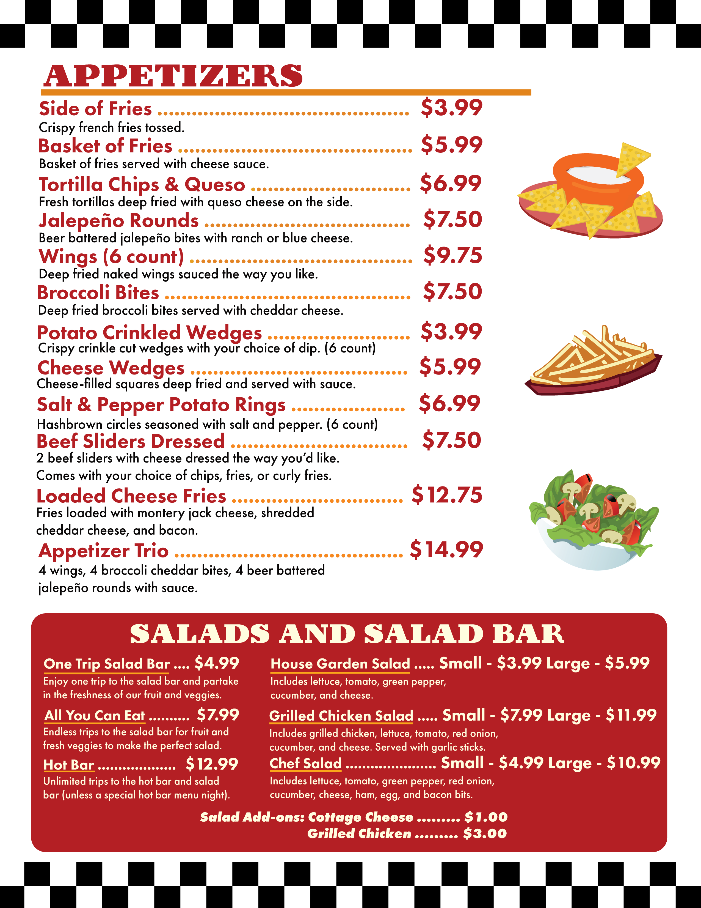
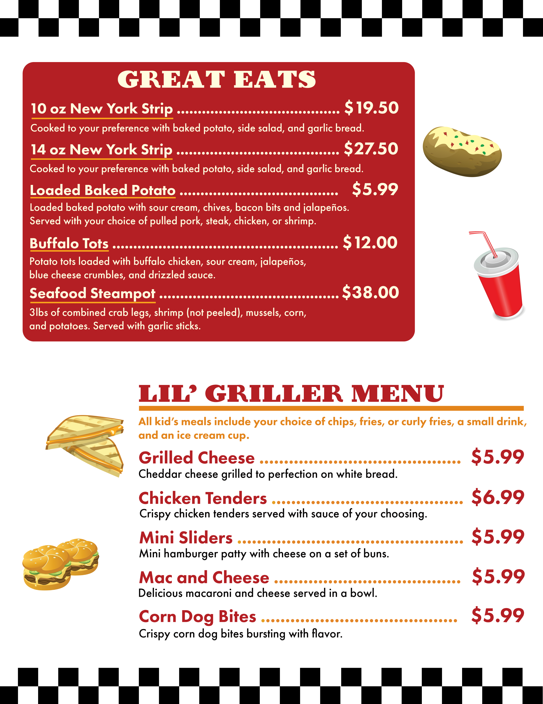
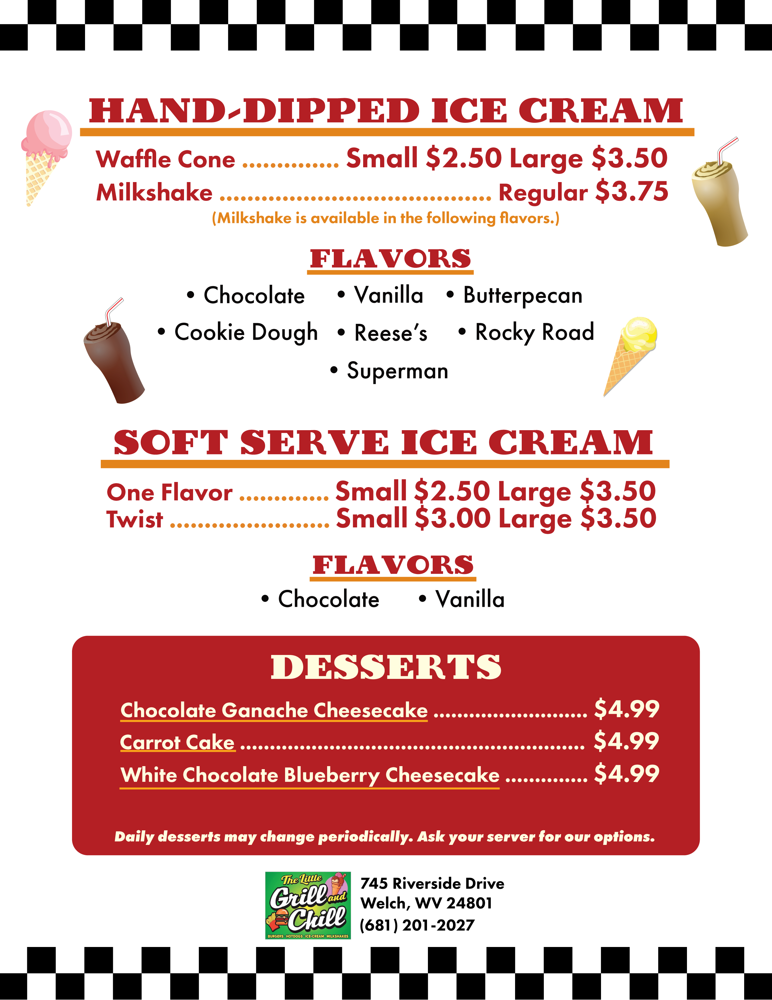

"The Little Grill and Chill" Menu Design
- Medium: Paper 8.5 x 11
- Date: 2024
- Programs Used: Illustrator, Indesign
"The Little Grill and Chill" is a newly opened restuarant located in Welch, WV. One step inside the doors and any patron can feel the retro dining atmosphere the establishment has to offer. Before its grand opening the owner of the restaurant commissioned my services to design and layout the menu for customers to use when ordering. Immediately I began toying with color palettes and aesthetic inspiration. Ultimately the design leaned into the checkered, retro aesthetic of diners from the mid 1900s.
Finding a balance between composition and readability posed the greatest challenge in this project. However, using typographic skills I have honed on allowed me to experiment with the placement of the menu items. Ensuring each section stands out was key as to give the menu a varied texture in type. Finally, I conceived the idea of calling the kid's menu the "Lil' Griller Menu" to further tie in the name of the establishment, as well as the friendly appear the owner was striving for.
